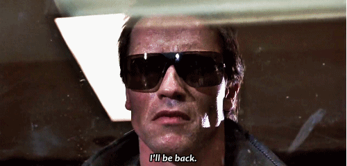
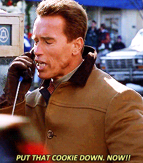
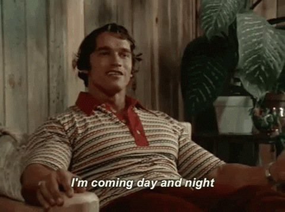
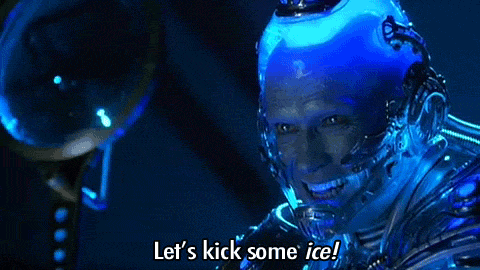

Alex Corrado
He's Dis Guy, Bro
The name's Alex Corrado. I'm just a simple guy trying to make something of himself in this world. My mission: to obtain the technical skills I need to change my career path.
Favorite Arnold Schwarzenegger One-Liners
|  |
I'll Be BackPerhaps Arnie's most famous one-liner from his long and distinguished career, this one-liner never gets old, even 30+ years after he first said it. |
|  |
Put That Cookie Down, NOW!Even with over 15 years of experience in show business, our Austrian friend marries comedic chops perfectly to his bread-and-butter action hero-style delivery. |
|  |
I'm Coming Day and NightInfluencing an entire generation of aspiring bodybuilders, Arnie tells up exactly how it feels after he works out (and perhaps gives us a clue as to why he never stopped). |
|  |
Let's Kick Some IceThe flip side of cheesy one-liners is that it can sometimes backfire spectacularly. In this horribly forgetful version of the caped crusader, Arnold only speaks in terrible ice-related puns. Around this time he started to become a parody of himself. |